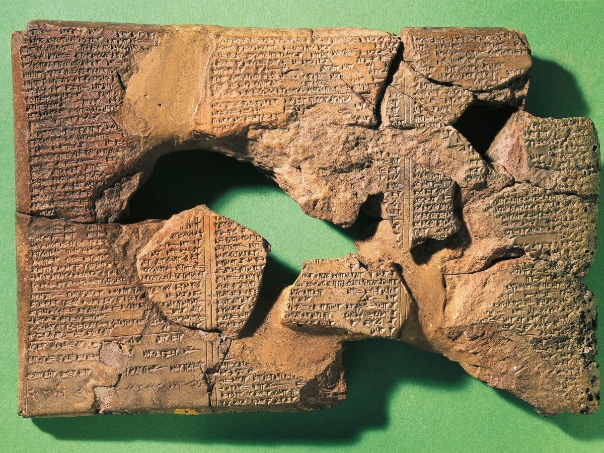
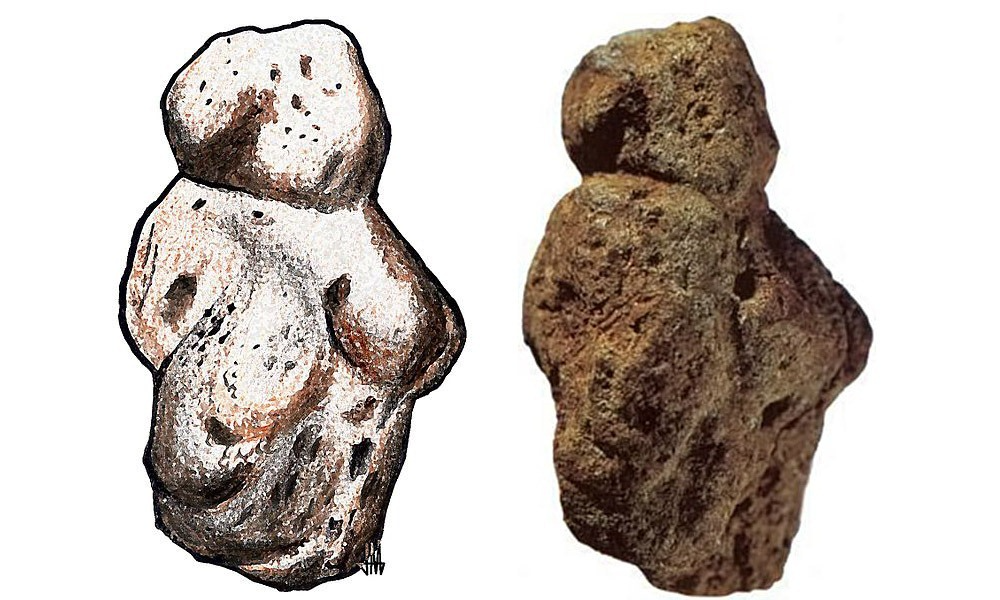
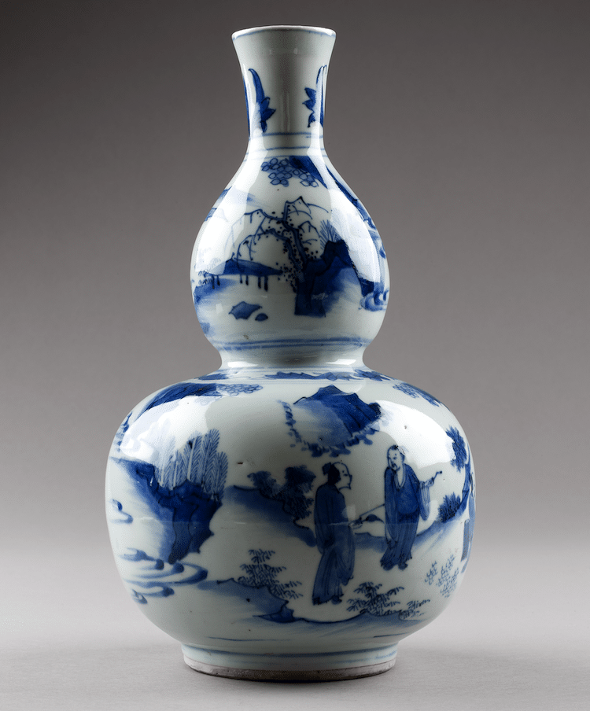
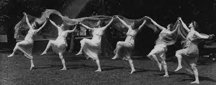

Spark creativity through the 8 categories of traditional art
Historical Context
Literature
The earliest forms of literature orginated in ancient Mesopotamia. Cities and law codes are examples of these earliest examples of literature. During the Sumerian civilization, people used markings on clay tablets which is known as cuneiform. These texts consisted of economic and administrative documents. Later forms of literature such as poety, hymns and essays began by the third millennium B.C.

Caption: The oldest known piece of literature.
Visual Arts
Drawing and painting dates back thousands of years. The earliest known for of visual arts are non-figurative cave paintings that consisted of hand stencils and geometric shapes.
Graphic Arts
Graphic design can be traced all the way back to 15,000 BC, when the first known visual communications arose. These pictographs and symbols are present in the Lascaux caves in southern France.
Plastic Arts
The origins of this category are to be found in the highly primitive prehistoric sculpture of the Acheulian culture of the Lower Paleolithic, exemplified by the humanoid effigy - the Venus of Berekhat Ram (230-700,000 BCE).

Caption: The humanoid effigy - the Venus of Berekhat Ram
Decorative Arts
The earliest type of decorative art was ancient pottery, notably the Jomon style Japanese ceramics pioneered from about 14,500 BCE.
The term "decorative arts" was developed in the 1800's by English and American art historians to distinguish pottery, weaving, woodworking, and similar arts from what they considered the "fine arts," such as painting, sculpture, and architecture.

Performing Arts
While the terms 'performance' and 'performance art' only became widely used in the 1970s, the history of performance in the visual arts is often traced back to futurist productions and dada cabarets of the 1910s.

Music
The music of prehistoric cultures is first firmly dated to c. 40,000 BP of the Upper Paleolithic by evidence of bone flutes, though it remains unclear whether or not the actual origins lie in the earlier Middle Paleolithic period (300,000 to 50,000 BP). “Hurrian Hymn No. 6” is considered the world's earliest melody, but the oldest musical composition to have survived in its entirety is a first century A.D. Greek tune known as the “Seikilos Epitaph.” The song was found engraved on an ancient marble column used to mark a woman's gravesite in Turkey.
Architecture
The exact origin of architecture could be said to date to the Neolithic period, around 10,000 BC, or simply when people stopped living in caves and started handling the way they want their houses to look and feel like.